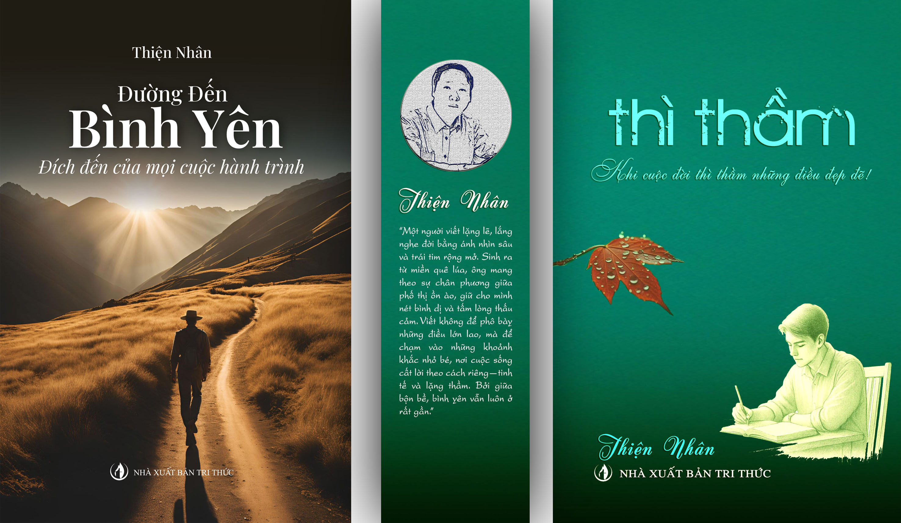

"Mỗi cuốn sách, mỗi trang viết tại đây đều là những mảnh ghép của tri thức thực chứng, được chắt lọc để đồng hành cùng bạn trên con đường tìm lại chính mình. Đây là nơi những trải nghiệm sống trở thành kim chỉ nam, giúp khơi mở sự thông tuệ và xoa dịu những xao động trong tâm trí. Khi tri thức được thấu hiểu bằng cả trái tim, sự bình yên sẽ tự nhiên trở thành hơi thở, hiện hữu trong từng quyết định và từng khoảnh khắc của cuộc sống đời thường."
Tác phẩm Đường Đến Bình Yên được lấy cảm hứng từ vùng núi Ronda – Tây Ban Nha, nơi những cung đường uốn lượn giữa trời mây và đá núi khơi dậy một cảm giác rất lạ: cảm giác vừa đi, vừa mất phương hướng, nhưng cũng rất gần với chính mình. Lấy bối cảnh quê hương của nhân vật Paco, cuốn sách tái hiện hành trình nội tâm từ năm 11 tuổi — khi cậu rời khỏi làng quê nhỏ để bước vào thế giới rộng lớn hơn, với nhiều va đập, thử thách và cả những tưởng như vỡ vụn.
Đường Đến Bình Yên không đi theo lối kể thông thường, mà chọn cách lặng lẽ dẫn người đọc vào một hành trình rất riêng – nơi mỗi bước đi là một lần thử thách niềm tin, sự lựa chọn, và cả cách ta đối diện với chính mình. Tác phẩm không cố tìm một định nghĩa cho bình yên, nhưng qua từng trang viết, nó dần hình thành một điều gì đó gần gũi và thật: rằng bình yên không đến từ việc tránh né bão giông, mà từ khả năng đứng vững giữa giông bão mà không đánh mất mình.

Tác phẩm Thì Thầm được viết trong những khoảng lặng rất nhỏ – những buổi chiều không vội, những sáng sớm không lời, những lúc mà cuộc sống dường như ngừng lại một chút, đủ để lắng nghe điều gì đó rất khẽ từ bên trong. Không có câu chuyện cụ thể, cũng không có nhân vật rõ ràng, Thì Thầm là tập hợp những mảnh rời rạc của đời sống nội tâm – nơi mỗi suy tư, mỗi cảm giác thoáng qua đều được giữ lại bằng một thứ ngôn ngữ rất tiết chế.
Trong thế giới ngày càng ồn ào, Thì Thầm là một lời thì thầm đúng nghĩa – về lòng tốt, về sự bao dung, và những đóa hoa lặng lẽ nở từ bên trong mỗi người. Những câu chuyện giản dị, nhưng chứa đựng sức mạnh chữa lành từ sự đồng cảm sâu sắc.
Hai cuốn sách – một hành trình, một khoảng lặng – nhưng gặp nhau ở cùng một điểm: sự thành thật. Thành thật với đời sống, với cảm xúc, và với chính mình. Và có lẽ, trong một thế giới ngày càng nhiều tiếng nói, những cuốn sách biết thì thầm đôi khi lại là những cuốn sách ở lại lâu nhất trong lòng người đọc.

“Tôi bắt đầu viết từ những trải nghiệm đời thường, những vết thương và cả những khoảnh khắc bình yên. Mỗi cuốn sách là một lời nhắn nhủ: dù cuộc sống bộn bề, ta vẫn có thể tìm thấy sự lắng đọng trong tâm hồn.”
“Một người viết lặng lẽ, lắng nghe đời bằng ánh nhìn sâu và trái tim rộng mở. Sinh ra từ miền quê lúa, ông mang theo sự chân phương giữa phố thị ồn ào, giữ cho mình nét bình dị và tấm lòng thấu cảm. Viết không để phô bày những điều lớn lao, mà để chạm vào những khoảnh khắc nhỏ bé, nơi cuộc sống cất lời theo cách riêng—tinh tế và lặng thầm. Bởi giữa bộn bề, bình yên vẫn luôn ở rất gần.”
Những trang viết giúp bạn tách mình khỏi những xao động, tìm về sự tĩnh lặng giữa thế gian bộn bề.
Mỗi câu chữ là một tấm gương phản chiếu, giúp bạn nhìn sâu vào tâm hồn và tìm lại chính mình.
Không là lý thuyết suông, đây là tri thức chắt lọc từ những vết thương, niềm vui và sự tỉnh thức có thật.
Giúp sự bình an không còn là mong ước, mà trở thành hơi thở hiện hữu trong từng quyết định đời thường.
Mời bạn lắng nghe giai điệu của sự bình yên...
Giữa nhịp sống hối hả, hãy dành chút lặng im để lắng nghe chính mình. Phóng sự giới thiệu tác phẩm "Thì Thầm" sẽ giúp bạn tìm thấy sự bình yên từ bên trong, nhận ra rằng chính bạn là điều kỳ diệu lớn nhất mà cuộc đời ban tặng.
Hashtag: #thiệnnhân #sáchthìthầm #đườngđếnbìnhyên #chữalành #bìnhyên #lắngnghetráitim Hashtag: #thitham #langnghe #tamhon #camxuc #thiennhan #dieukydieu #binhyentamhon #sachmoi #mienbinhyen #tacgiathiennhan
Video phác họa cuộc đời Paco – nhân vật chính mang hình bóng của mỗi chúng ta khi đối diện với bất công và sự quay lưng của cuộc đời. Một hành trình chấp nhận những mảnh ghép không hoàn hảo để tạo ra bình yên từ chính tâm hồn mình.
Hashtag: #chualanh #thitham #tacgiathiennhan #duongdenbinhyen #paco #sachthiennhan #sachhay #reviewsach #vanhoc #trithucmoi #chualanh #phattrienbanthan #nuoiduongtamhon #baihoccuocsong #nguoitruongthanh
Đường đến bình yên là hành trình của sự tĩnh tại. Từng trang viết chứa đựng cảm xúc chân thật dẫn dắt người đọc chậm lại cảm nhận và thấu hiểu sâu hơn về cuộc sống. Tác phẩm khơi dậy nguồn năng lượng dịu êm mở ra một không gian của lòng nhân hậu và ánh sáng nội tâm.
Hashtag: #tácgiảthiệnnhân #đườngđếnbìnhyên #sáchhay #tĩnhTại #nănglượngsống #nhânhậu #nộitâm Hashtag: #duongdenbinhyen #hanhtrinh #tinhtai #thaukhieu #nangluong #nhanhau #anhsang #tacgiathiennhan #mienbinhyen